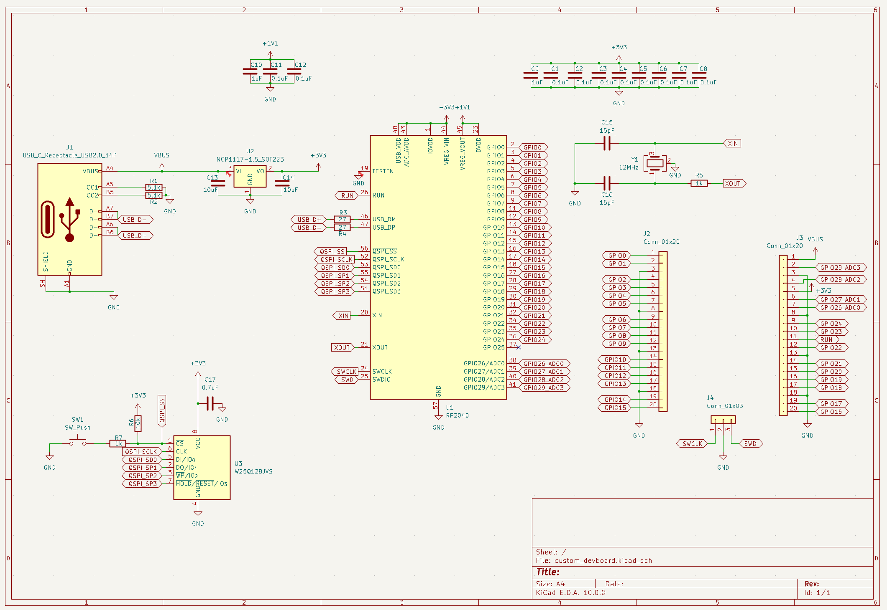
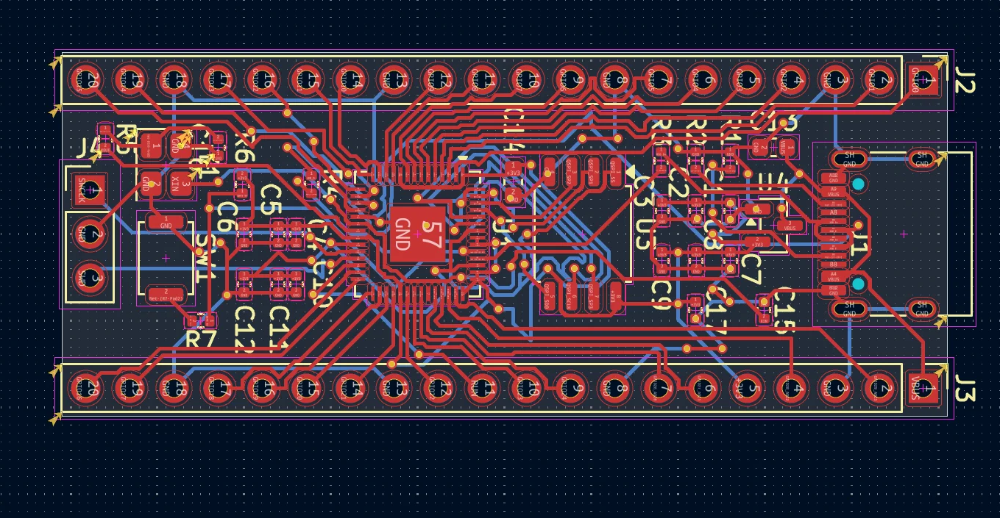
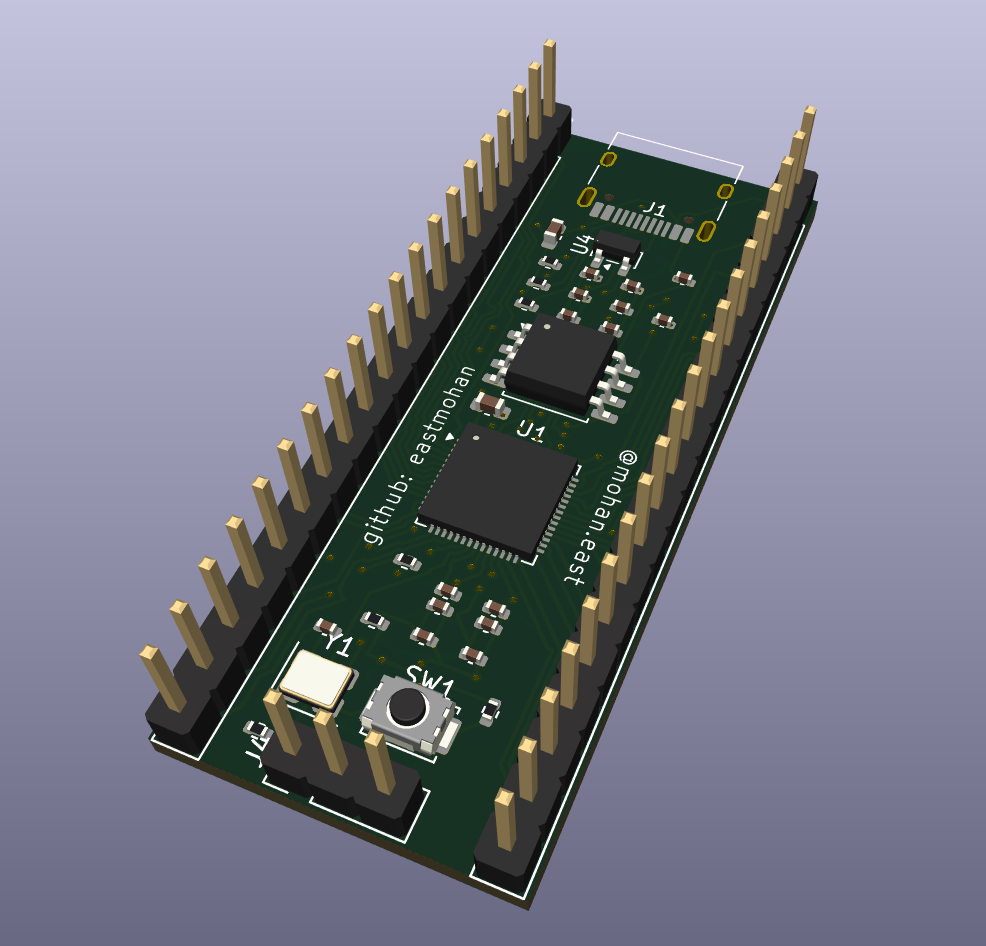
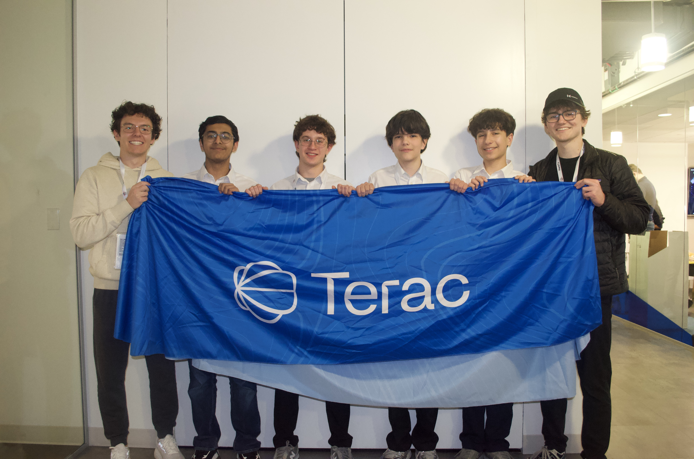

Hardware:
These are physical projects I have designed and built.
Custom Macropad
I made a fully custom macropad with 6 keys, a small screen, and a rotary encoder. I designed the PCB from scratch, made a case for the macropad, and wrote the firmware.
Click card to expand project details
This is a 6-key macropad using the Seeed XIAO-RP2040 devboard. The macropad has 6 keys, a 0.91" OLED display, a rotary encoder, and 2 RGB LEDs.
I designed the schematic and PCB from scratch in KiCAD and made the 3D-printable case in Fusion 360. I also programmed the microcontroller as detailed below.
Key assignments:
- Copy
- Paste
- LEDs and OLED On/Off
- Previous Track
- Play/Pause
- Next Track
The OLED displays current media information using a Rainmeter skin, Lua script, and Python script that I made. The screen shows the artist and the track name, featuring scrolling text. The rotary encoder controls volume, and the LEDs are set to cycle through colors. This cycle is synced with the LED onboard the microcontroller.
Since recording this video, a few changes have been made:
- The OLED now shows messages when a button is pressed
- The LEDs are now RGB, and the LED on the XIAO is synced with the two on the PCB
- The top left button now turns the OLED and LEDs on/off
Learn more on my GitHub: https://github.com/eastmohan/macropad
RP2040 Devboard
I used KiCAD to design a devboard using the RP2040 chip.
Click card to expand project details
I made this to get a better understanding of how devboards work. I also wanted to get better at PCB design, which this definitely helped with thanks to the high amount of traces to route in a small footprint.
I started off by making the schematic, as shown below:

I then laid everything out and routed the traces in KiCAD's PCB editor:

I have yet to order the PCBA for this and solder on the components that aren't SMD, but I plan to do so in the future.
The devboard looks like this, though it would also have a USB-C port at the end where it says J1.

Audi R8 Model
I used Fusion 360 to design a 3D-printable car model based on Audi R8 reference images.
Click card to expand project details
During my freshman year at TJHSST, I used some of my free time to design a model car based on reference imagery. I chose the Audi R8 because I thought the geometry of the car would be interesting to CAD. It was definitely a challenge, and the result isn't quite accurate, but through the process, I learned a lot about CAD and using reference images.

At the end of the school year, we had a project in Design & Tech to make a toy. My teacher saw my design and suggested I use it for the project. I ended up 3D printing it, including TPU wheels, and added a door and servo motors for the wheels. I then programmed it with an Arduino Uno to make it drive straight forward. It was slow and simple, but it was my first Arduino project and layed the groundwork for other projects I've done since. I would've liked to make it faster and more complex, but we had extremely limited materials and time. If I were to do it again, I think I would've designed a gear box and used one servo each for front and rear wheel drive, and a third one for steering, which could have made it more fun.
To present the project, I had to make a video. The video is below:
The project files are on GitHub.
Software:
These are projects I have coded using languages including HTML and CSS, JavaScript, Python.
GridWatch
I made a hackathon-winning project that uses a random forest ML model to predict power outages. Use GridWatch today at gridwatch-amber.vercel.app!
Click card to expand project details
GridWatch is a system for detecting and predicting power outages around the world. GridWatch uses weather data, infrastructure risk, and expert analysis to predict and respond to grid failures faster
Along with 3 of my friends, I made this project at HackTJ 13.0, the world's largest high school hackathon. We won the Terac challenge category for our integration of the Terac platform into GridWatch.
The map displays 10 select locations across the US as colored dots. The colors represent the risk of an outage, shown by a color key lower on the page. Clicking on one of the dots allows the user to see the actual percentage as well as some information that led to the risk classification. Users can also enter any location into the search bar in the location dropdown to get live outage risks. However, it is important to note that predictions may be less accurate outside of the US due to differences in power infrastructure that the model may be based on.

Since winning the hackathon as a group, I have individually made some changes:
- Users may enter any location in the world
- Locations and addresses entered in the search box are now auto-completed
- User-submitted outage reports show on the dedicated page and can be filtered by location